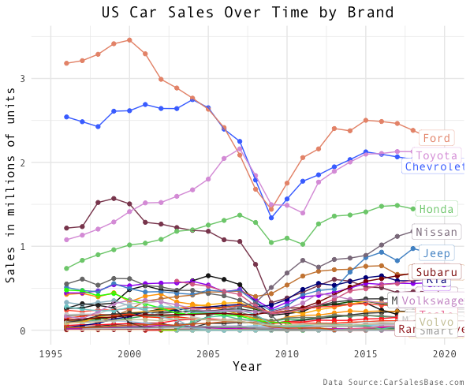
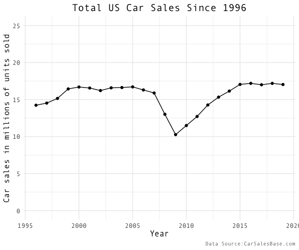
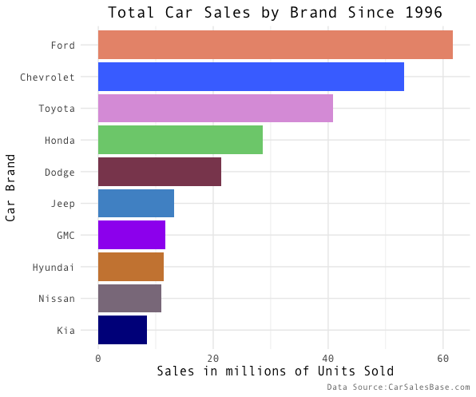
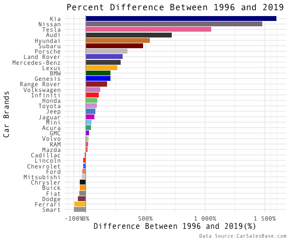

Ford, Toyota, Honda? Who Takes the Cake?
A look into US car sales data in the last 25 years…

Introduction
This project started out as me trying to recreate a moving bar chart. I saw them around online and thought they were a cool way to visualize data over time that reminded me of a “data race.” Ironically, I came across a great site that stores car sales data over time, and thought it was the perfect fit to create a “race chart.” However, after I created my moving bar chart, I was still interested in learning more about car trends over time, and thought you might be as well. So, I decided to make some figures and write up a short piece.
In this post, I want to answer these two bullet-points:
What have US car brand sales looked like since 1996?
What is the top car brand now and since 1996 in the United States? What brands have sold more over time?
Note: There is a reason I’m using 1996 as my starting point. The data I scraped is partially incomplete. There aren’t missing observations after the first data point, but some starting points are much later than when the brand begins selling cars. For example, the first recorded number of sales for Chevrolet in the dataset was in 1996 despite it being founded in 1911. The other brands seemed to begin and end at reasonable times according to my knowledge, and all brands seemed to have full data after 1996. Because of this, I decided to use 1996 as a starting point for the following figures. Even though it feels somewhat arbitrary, 23 years is still a sizable chunk of time to view car sales.
What have car brand sales looked like in the past 23 years?

There has been a few notable trends since 1996. Firstly, the United States experienced an economic recession around 2008–09 which clearly affected car sales. Almost every brand dropped in sales at that time and some of the big brands never fully recovered even in 2019 - almost a decade later. With an initial look, it might appear that the car industry has sold fewer units over time. But, if you look at the aggregated yearly car sales (below), you can see that people are buying just as many cars in 2019 as they were before the recession.

So, what does this mean? This means that more of the market share of car sales is distributed among more brands today than in the past. Hopefully, this is positive news as it may suggest that the market is more competitive with more companies having more power in the car sales market.
One could argue that we are actually selling less cars because there are more people in America in 2019 as compared to 1996, and so the car sales per capita is lower. The figure above does not control for confounding variables like this, but only looks at the raw car sales number over time. I mention this because when viewing any figure it is always important to keep possible confounding variables in mind. However, in this case, I still think that car sales data has an interesting story to tell and can be particularly valuable in making relative comparisons. With these relative comparisons (comparing Ford to Toyota etc.), the population confounding variable is controlled for as the US population differences between ’96 and 2019 shift the same amount for both US brands. Using a comparison, you just see one brand simply out-performing another because it holds time variables, like change in overall US population, constant.
What is the top car brand now and over the last 20 years in the United States? What brands have sold more over time?

As you can tell from the race graph in the beginning, Ford has consistently sold more units than any other brand in the past 25 years. This figure shows the total sales of each of the brands from 1996-2019 with Ford in the lead. While it is easy to see who sold the most cars with a graph like this over a period of time, you cannot see how the individual businesses trended over that time period. Perhaps one brand steadily grew, while another sold a lot of cars at first, but then went bankrupt. So, we still don’t know which brands have truly grown and done better over time. To help answer this question, I created two more figures. The first shows a brand’s increase or decrease in market share, and the second shows a relative comparison of sales growth over the time period. Both figures show a different aspect of brand growth.
Technical note: This figure does not control for whether the total number of car sales is increasing or decreasing. Normally, it might be wise to put these on a scale showing the percent of the market share they each took, but since the total market share is relatively close to the same over time (as seen in figure 3), and the market in general has been quite dynamic, I believe you can see the trends by just subtracting the first and last year.
In the figure above, we can see at the top of the list: Nissan, Toyota, and Honda. All of these brands now take significantly more of the market share in 2019 as compared to 1996. This means that their business has increased over time and has made positive absolute change. But, we may also want to know which companies have actually grown significantly in size. This would give us a better picture of which companies have really taken off. (If you think about it, a huge monopoly can increase in sales 1% which increase might mean a higher number of sales than everyone else because that 1% means a lot of cars, but the huge monopoly isn’t really experiencing growth.) The figure below specifically shows which companies relatively have increased in size since 1996.

Kia, Nissan, and Tesla are the top three brands that have seen the highest percentage increases from 1996 to 2019. While percentage change can be helpful, it can often be misleading. For example, if a person A sells 1 car the first year and then 10 cars the next year they are performing at 1000% compared to their previous year while person B sold 1 million cars the first year and will have to sell significantly more than 10 cars to get their percentages to match person A. Person B might be dominating the market, but if you only looked at percentage increases you may never know.
These two figures become particularly useful if brands appear on the top of both (which some do!). For those brands, it means that they are both selling a significantly higher portion of the market share and have significantly increased in size compared with the starting year which, in this case, points to Nissan, Hyundai, and Subaru.
Conclusion
As we have looked through the data, we have found a few insights about the car sales market since 1996:
Ford has consistently sold more cars any other brand since 1996 and remains in the lead in 2019.
The US recession in 2008-09 had a large impact on the car sales market decreasing yearly car sales as much as 7 million overall, but has recovered since that time.
Partially because of the recession, today, more brands have more of the market share than in 1996.
A few brands have seen substantial growth during the last 23 years and now hold a significant portion of the market share. These brands include Nissan, Subaru, and Hyundai.
My coding is viewable here. I modeled my race chart off of this post.
Thank you for looking through this post, and I hope you enjoyed it. Feel free to comment below, and I encourage you to share with others if you found it interesting. For my next project, I want to look at car companies over time and how they relate to car brands… so stay tuned!